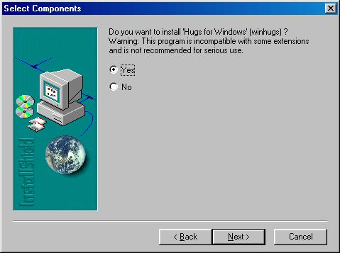
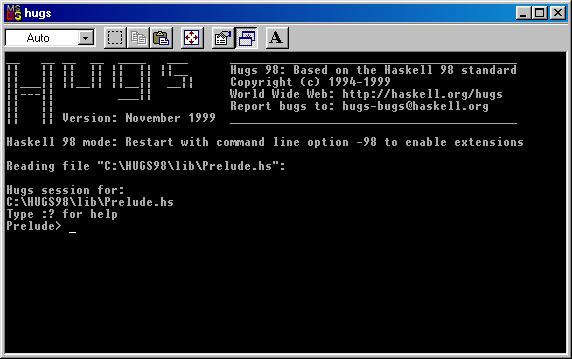
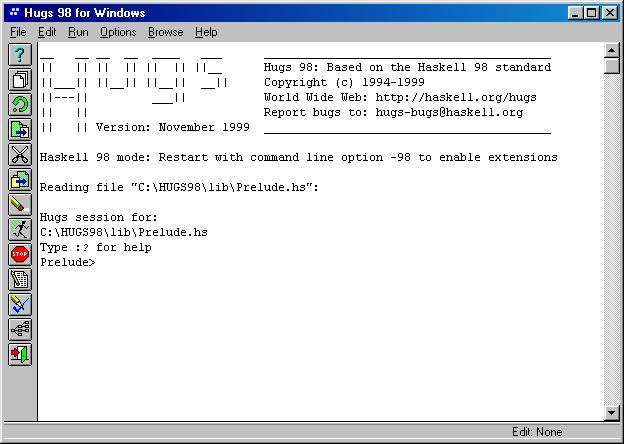
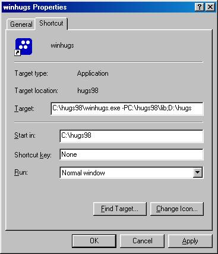
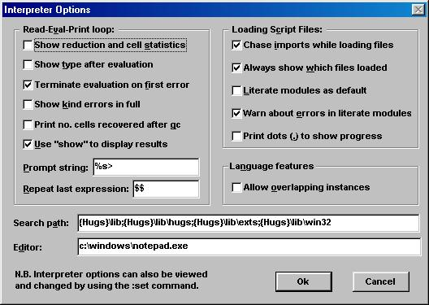
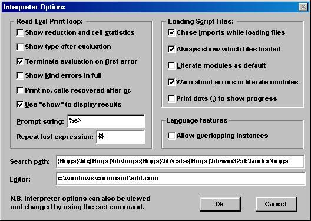

PROGRAMMING LANGUAGES
HASKELL RESOURCES AND INSTALLATION
E. Head and L. Lander
The material here includes classroom slides of courses taught at Binghamton.
Graphic: haskellinstall1.jpg:

Graphic: haskellinstall2.jpg:

Graphic hugsScreen.jpg:

Graphic winHugsScreen.jpg:

Graphic winhugsprops.jpg:

Graphic defaultoptions.jpg:

Graphic changedoptions.jpg:

Code ExampleL.lhs
This is an Example of the "literal" approach to programming in Haskell.
Code format:
1) CODE needs to be signaled.
2) Code begins with a ">"
3) There need to be blank lines before and after the code.
A script(a program) contains a series of definitions.
In Haskell the LAYOUT is used to state where one definition ends
and the next one begins.
"Formally, a definition is ended by the first piece of text (code or comments)
which lies at the same indentation or to the left of the start of the
definition." (Thompson, p47). You can use tabs or spaces for indentation.
This file uses "tab".
Module names should begin with a capital letter.
The file name should match the module name exactly with the ".lhs" extension.
i.e. ExampleL.lhs
> module ExampleL where
> import List
Examples from CS571/CS471 lectures on Haskell
To load this program type ("..>" stands for the Haskell prompt):
..>:load ExampleL.lhs
When you load this module you will also see the following modules loaded.
..\lib\Prelude.hs
..\lib\Maybe.hs
..\lib\List.hs
..?\ExampleL.hs
To edit this module type
..>:edit
NOTE: all hugs comments can be a just the first letter instead of the entire
word. i.e. to edit type
..>:e
py is a Float constant.
> py :: Double
> py = 3.14159
The function definition for next5numbers is implicitly typed.
It creates a list of 5 consecutive numbers that follow the input number.
Each number differs from the next by 1.
> next5numbers n = [n+1,n+2..n+5]
Below are two different function definitions. Both are implicitly typed.
> sq n = n^2
> cube x = x * (sq x)
Explicit typing
> sq1 :: Int -> Int
> sq1 n = n^2
Using guards. Notice the indentation.
> factorial :: Int -> Int
> factorial x
> | x < 0 = error "neg x"
> | x == 0 = 1
> | otherwise = x * factorial(x - 1)
Using Patterns to define perms. "\\" is defined in List.hs.
> perms :: Eq t => [t] -> [[t]]
> perms [] = [[]]
> perms x=[a:p|a<-x,p<-perms(x\\[a])]
Define a function to calculate the area of a circle of radius r
> area r = py * r * r
Haskell will determine for itself that the type of area is Double -> Double
because of the type given to 'py'. The type of pi * r * r is
Floating a => a -> a, which we will explain in the Haskell notes